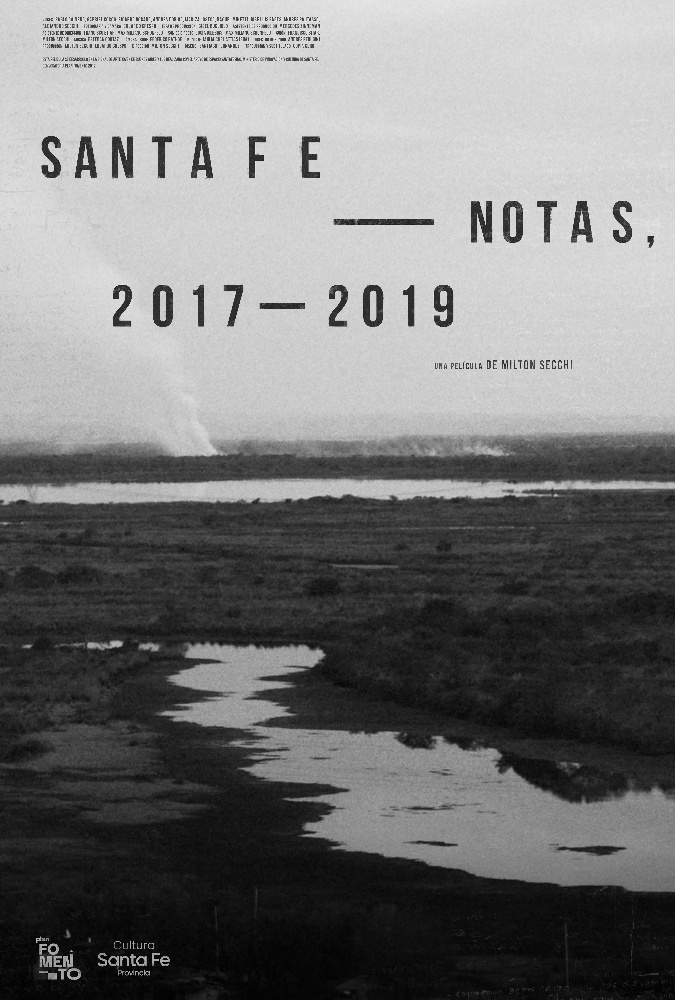

Santa Fe — notas, 2017–2019
Santa Fe - notes, 2017–2019 / 2021
Santa Fe - notas, 2017–2019 / 2021
Dirección: Milton Secchi Naput
Directed by Milton Secchi Naput
Argentina – US
58 min / HD

Sinopsis
Synopsis
Santa Fe - notas, 2017-2019 es una historia hecha de fragmentos de paisajes, edificios, voces y objetos. Es una película construida sobre la relación entre arte y colonia, memoria y amenaza, pueblos originarios y silencio.
Santa Fe - notes, 2017-2019 is a story made of fragments of landscapes, buildings, voices and objects. It is a film built on the relationship between art and colony, memory and threat, native people and silence.
↗ Ver en VimeoWatch on Vimeo
Proyecciones y premios
Screenings & Awards
- FIDBA — Buenos Aires International Documentary Film Festival, Competencia Nacional
- UC Santa Cruz — Antídoto screening and directors chat
- Premio a la creación documental — Provincia de Santa Fe
- Award for documentary creation — Santa Fe Province